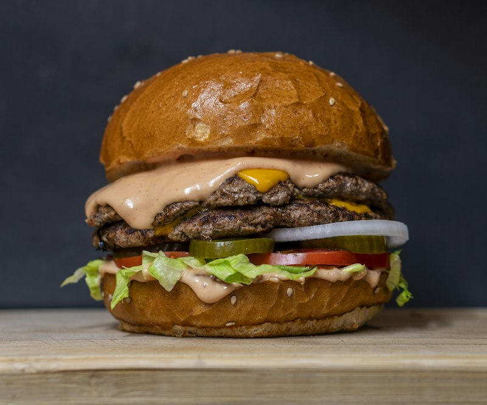

Your daily meal inspiration

Prep Time
15 min
Cook Time
20 min
Servings
4 people
Juicy homemade burger with all the fixings
Extended Preparation Time
This recipe requires more than 20 minutes to prepare. Plan accordingly!